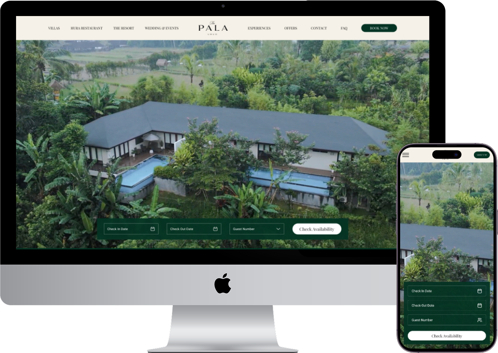
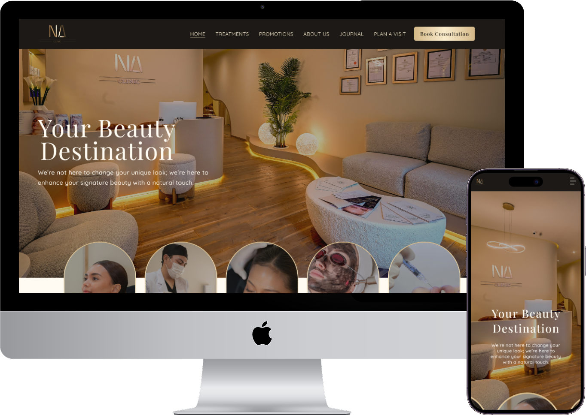
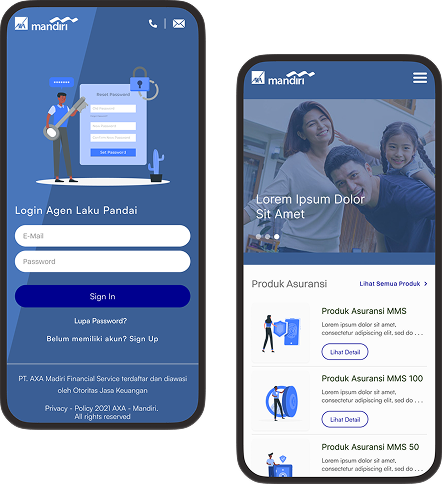

I'm a UX designer. I'm passionate about creating usable digital products. I have worked with incredibly talented people across different companies.
A luxury resort website designed to balance immersive visual storytelling with clear navigation, guiding users from exploration to booking with ease.

A clinic website redesign focused on clarity and conversion, simplifying treatment exploration and guiding users toward consultation with confidence.

Designing a structured and scalable dashboard experience for financial agents, enabling efficient data management and decision-making across platforms.
